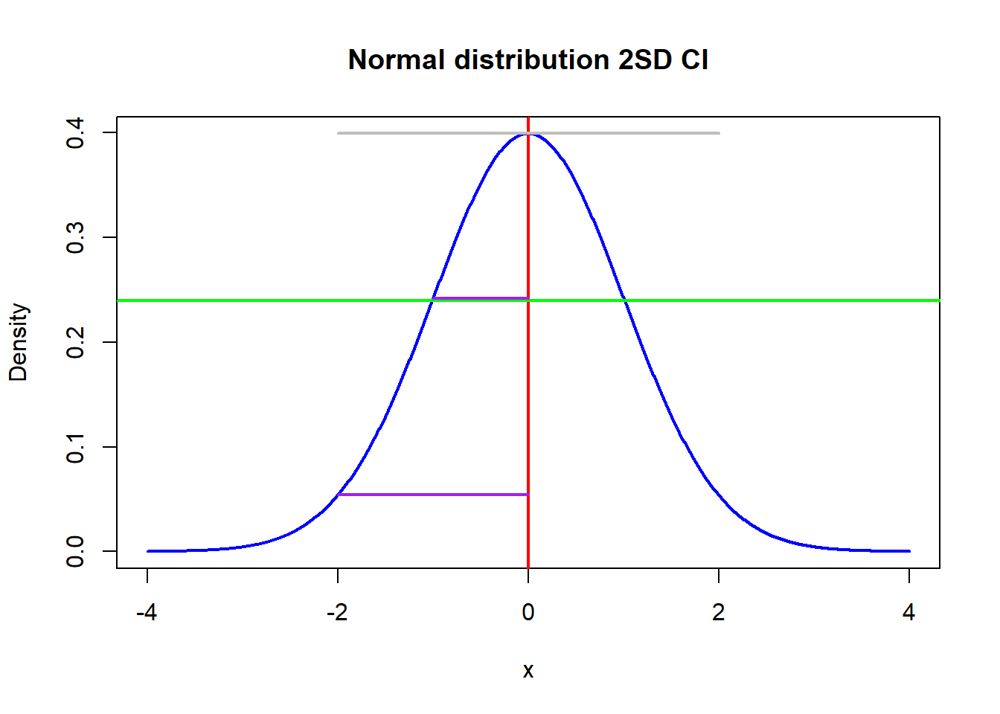

After some computation, students will then be (re?) introduced to the normal distribution visual SD method (going about .6 down the mode or using the inflection point) and the reintroduced to the 2SD method. Students will also be reminded that the SE is the (est) StDev of the sampling distribution, and that the confidence level can be assumed to be 2 if 95% confidence is desired.
# edited code, not mine completely, just wanted to quickly demonstrate something visuallymean_value <-0sd_value <-1x <-seq(-4, 4, length=1000)y <-dnorm(x, mean = mean_value, sd = sd_value)plot(x, y, type ="l", col ="blue", lwd =2, xlab ="x", ylab ="Density",main ="Normal distribution 2SD CI")abline(v = mean_value, col ="red", lwd =2)abline(h =max(y)*.6, col ="green", lwd =2)segments(x0 =-sd_value, x1 = mean_value, y0 =dnorm(-1, mean = mean_value, sd = sd_value),y1 =dnorm(-1, mean = mean_value, sd = sd_value), col ="purple", lwd =2)segments(x0 =-sd_value*2, x1 = mean_value, y0 =dnorm(2, mean = mean_value, sd = sd_value),y1 =dnorm(2, mean = mean_value, sd = sd_value), col ="purple", lwd =2)segments(x0 =-sd_value*2, x1 = sd_value*2, y0 =max(y),y1 =max(y), col ="grey", lwd =2)

Assessment:
Students will start off with two groups of images each with two shaded lumps and be asked to find which one is more significantly different.
-Students will then be asked to write aproximate the stdeviation and confidence intervals using the visual method
-Studetns will then accept or reject using those CIs
-using combined stdev, they will be asked to calcuklate the sqrt(f) ratio (MAYBE NOT HAVE THIS)
(currently looking into the visual connection of the F ratio, so this is a work in progress. The within variance is easy to find visually, the between variance is the issue right now. Im basically looking for a way to calculate the between variance using only two normal distributions with means and variance known. I will look into this at a later time)
There willl also be some formula using questions just to make sure they can use the provided formula. These will be fairly standard and uninteresting but still usefull